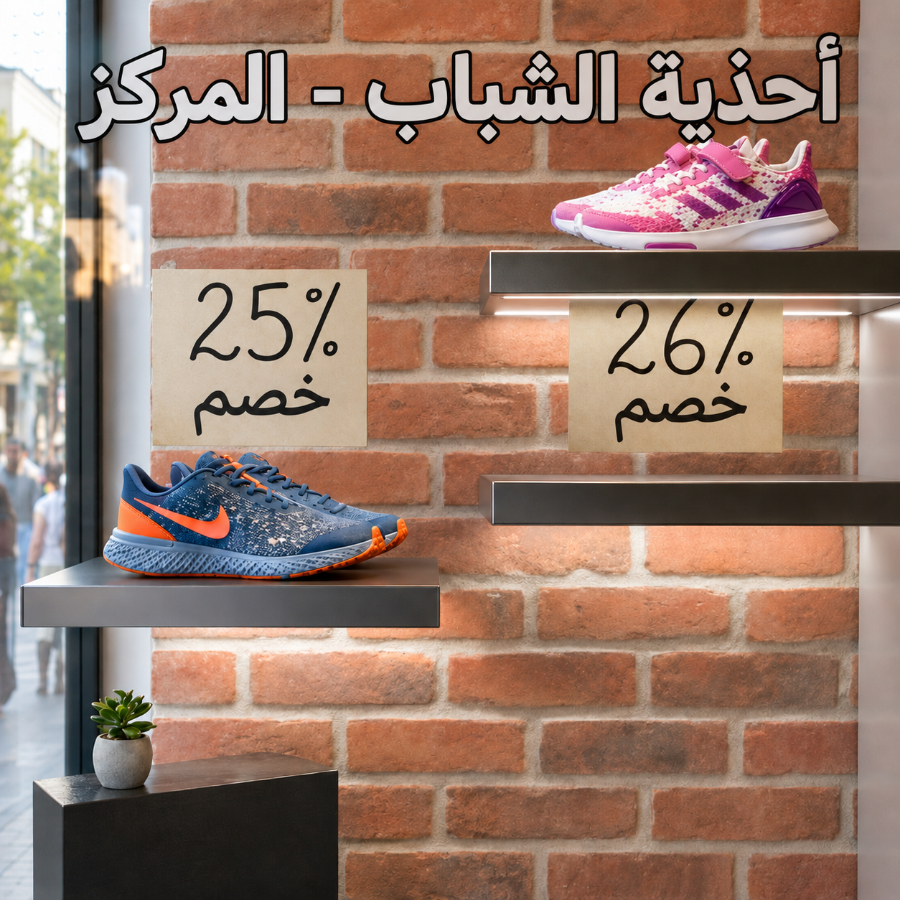
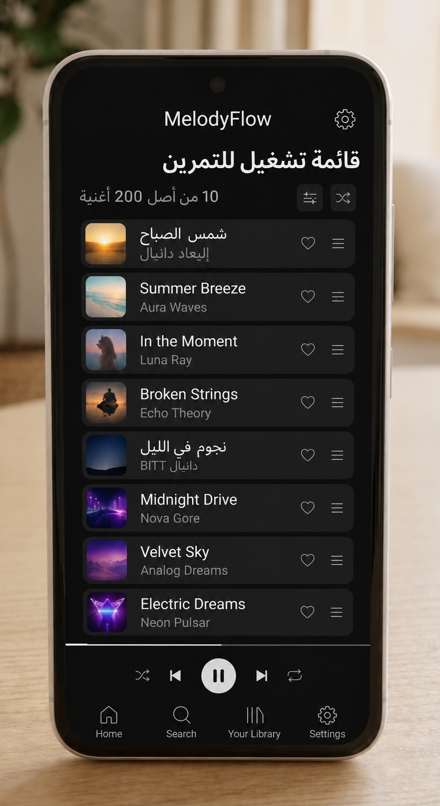
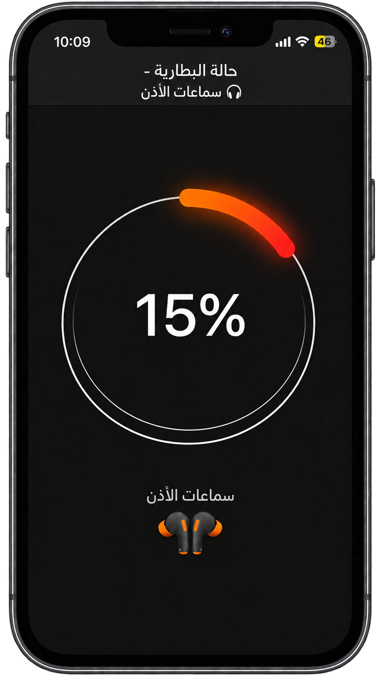

هل فكرتم مرة ماذا يعني شريط التقدم؟
بدأتم بتنزيل اللعبة الجديدة "ترولز عين بوكك".
حجم اللعبة 200 جيغابايتالجيغابايت هو وحدة ذاكرة في الحاسوب - الجيغابايت يساوي 1,000 ميغابايت أو مليار بايت! (GB) ويستغرق تنزيلها وقتًا طوييييلًا جدًا.
حرّكوا شريط التنزيل إلى اليمين واليسار.
كم جيغابايت سينزل إلى الهاتف عندما تصل نسبة التنزيل إلى %36؟
كلما زادت نسبة التنزيل المئوية، زادت معها كمية الجيغابايت (GB)،
أي إن النسبة المئوية النسبية تتغير كلما تغيّرت الكمية.

اختاروا الطريقة الأولى التي ترغبون بتعلّمها لحساب القيمة:
اضغطوا على السهمين على الجانبين للتقدم:

والآن جرّبوا بأنفسكم.
نفس السؤال، وفي كل مرة بطريقة مختلفة.
هذه المرة من خلال التحويل من نسبة مئوية إلى كسر بسيط/عشري.
أنشأتم قائمة تشغيل لترافقنا في التمارين الرياضية، وفيها 200 أغنية.
%40 من الأغاني هي أغانٍ عربية.
كم أغنية عربية توجد في القائمة؟
المرحلة 1 - ما هو الكسر الملائم لـ %40؟
حوّلوا إلى كسر.
والآن جرّبوا بأنفسكم.
نفس السؤال، وفي كل مرة بطريقة مختلفة.
هذه المرة من خلال التحويل من نسبة مئوية إلى كسر بسيط.
أنشأتم قائمة تشغيل لترافقنا في التمارين الرياضية، وفيها 200 أغنية.
%40 من الأغاني هي أغانٍ عربية.
كم أغنية عربية توجد في القائمة؟
اكتشفنا أن الكسر الملائم لـ %40 هو 25 .
المرحلة 2 - أكملوا التمرين واحسبوا عدد الأغاني العربية في قائمة التشغيل الخاصة بنا.
والآن اختاروا الطريقة الثانية لحساب القيمة:
اضغطوا على السهمين على الجانبين للتقدم:
والآن جرّبوا بأنفسكم.
نفس السؤال، وفي كل مرة بطريقة مختلفة.
هذه المرة من بواسطة جدول التناسب.
أنشأتم قائمة تشغيل لترافقنا في التمارين الرياضية، وفيها 200 أغنية.
%40 من الأغاني هي أغانٍ عربية.
كم أغنية عربية توجد في القائمة؟
المرحلتان 1+2 - جدوا المعطيات واكتبوها في جدول التناسب:
| عدد الأغاني | النسبة المئوية |
|---|---|
| X | % |
| % |
| عدد الأغاني | النسبة المئوية |
|---|---|
| X | 40% |
| 200 | 100% |
والآن جرّبوا بأنفسكم.
نفس السؤال، وفي كل مرة بطريقة مختلفة.
هذه المرة من بواسطة طريقة التناسب.
أنشأتم قائمة تشغيل لترافقنا في التمارين الرياضية،
وفيها 200 أغنية.
%40 من الأغاني هي أغانٍ عربية.
كم أغنية عربية توجد في القائمة؟
كتبنا في جدول التناسب:
المرحلة 3 – ابنوا معادلة التناسب وحلّوها:
لكن قبل ذلك، تعالوا نحلّ تمرينًا واحدًا معًا.
تأملوا في التمرين التالي. لا تحلوه،
فقط انظروا إلى المعطيات وفكروا فيها.
الهدف اليومي في ساعتكم الذكية هو 8,000 خطوة.
أنجزتم %45 من الهدف.
كم خطوة مشيتم حتى الآن؟
تأملوا في التمرين التالي. لا تحلوه،
فقط انظروا إلى المعطيات وفكروا فيها.
الهدف اليومي في ساعتكم الذكية هو 8,000 خطوة.
أنجزتم %45 من الهدف.
كم خطوة مشيتم حتى الآن؟
المرحلة 1 - تحديد المعطيات
علينا أن نفهم ماذا يمثل كل معطى.
ماذا يمثل العدد 8,000؟
تأملوا في التمرين التالي. لا تحلوه،
فقط انظروا إلى المعطيات وفكروا فيها.
الهدف اليومي في ساعتكم الذكية هو 8,000 خطوة.
أنجزتم %45 من الهدف.
كم خطوة مشيتم حتى الآن؟
المرحلة 2 - كتابة المعطيات في جدول التناسب:
العدد 8,000 يمثل الكمية الكاملة (الهدف)،
والتي تساوي بالنسبة المئوية: %100
نكتب في جدول التناسب:
| الكمية | النسبة المئوية |
|---|---|
| 8,000 | 100% |
تأملوا في التمرين التالي. لا تحلوه،
فقط انظروا إلى المعطيات وفكروا فيها.
الهدف اليومي في ساعتكم الذكية هو 8,000 خطوة.
أنجزتم %45 من الهدف.
كم خطوة مشيتم حتى الآن؟
المرحلة 2 - كتابة المعطيات في جدول التناسب:
المعطى الثاني هو %45. أين نكتبه في الجدول؟
| الكمية | النسبة المئوية |
|---|---|
| 8,000 | 100% |
تأملوا في التمرين التالي. لا تحلوه،
فقط انظروا إلى المعطيات وفكروا فيها.
الهدف اليومي في ساعتكم الذكية هو 8,000 خطوة.
أنجزتم %45 من الهدف.
كم خطوة مشيتم حتى الآن؟
المرحلة 3 - نبني معادلة التناسب:
| الكمية | النسبة المئوية |
|---|---|
| x | 45% |
| 8,000 | 100% |
ما هي معادلة التناسب؟
اختاروا الإجابة الصحيحة:
تأملوا في التمرين التالي. لا تحلوه،
فقط انظروا إلى المعطيات وفكروا فيها.
الهدف اليومي في ساعتكم الذكية هو 8,000 خطوة.
أنجزتم %45 من الهدف.
كم خطوة مشيتم حتى الآن؟
المرحلة 4 – الحل:
التمرين الصحيح هو:
45%100% = x8,000نختزل النسب المئوية ونحصل على:
45100 = x8,000نضرب بالمقام المشترك 8,000 ونحصل على:
x = 3,600.
الاستنتاج: حتى الظُهر مشيتم 3,600 خطوة من الهدف اليومي وهو 8,000 خطوة.
والآن أنتم مستعدون للتدرب بأنفسكم!
سؤالان بسيطان للإحماء قبل أن نتقدم
سؤال إحماء 1 -
هل تتذكرون لعبة "ترولز عين بوكك"؟
إليكم لعبة "وحيدات القرن من عين خردليت"!
ينزّل تامر اللعبة التي حجمها 80 جيغابايتالجيغابايت هو وحدة ذاكرة في الحاسوب - الجيغابايت يساوي 1,000 ميغابايت أو مليار بايت! (GB).
حتى الآن تم تنزيل %45 من اللعبة.
أ. أي من التمارين التالية يعرض الطريقة الصحيحة لحساب كمية الـGB التي تم تنزيلها بالفعل؟
سؤال إحماء 1 -
وجدنا أن التمارين الصحيحة لحساب عدد الـGB التي تم تنزيلها حتى الآن هي:
45100·80أو0.45 · 80
ب. كم جيغابايت تم تنزيلها حتى الآن إلى الهاتف؟

سؤال إحماء 2 -
بطارية سماعات لاسلكية تكفي لـ 40 ساعة استماع عندما تكون مشحونة بالكامل.
حاليًا، يُظهِر التطبيق على الهاتف أنه تبقّى %15 من البطارية.
أمل غير متأكدة ممّا إذا كانت البطارية تكفي لساعتين من تمرين النينجا.
لذلك سجّلت المعطيات في جداول التناسب... لكنها لا تتذكر أي طريقة كتابة هي الصحيحة...
أ. ساعدوا أمل واختاروا طريقة كتابة المعطيات الصحيحة في الجدول.
سؤال إحماء 2 -
ساعدنا أمل على اختيار الجدول الصحيح.
| الكمية | النسبة المئوية |
|---|---|
| x | 15% |
| 40 | 100% |
ب. احسبوا كمية البطارية المتبقية وحددوا:
هل توجد لدى أمل بطارية تكفي لساعتين من تمرين النينجا؟